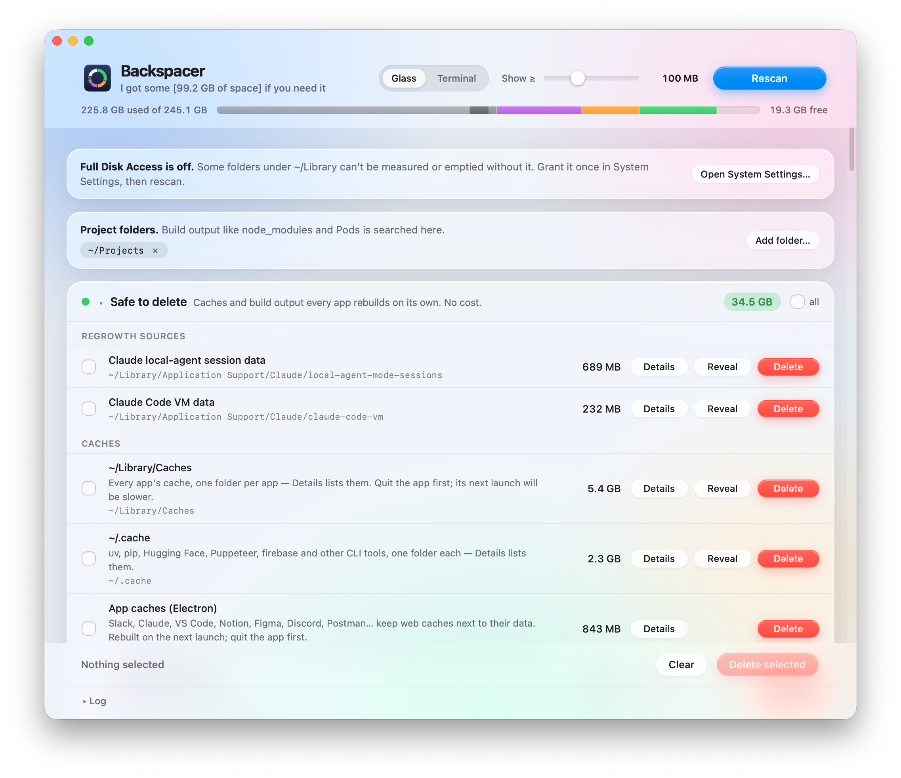

Safe to delete
Caches and build output every app rebuilds on its own. No cost.
removed for goodFree up disk space on a developer's Mac
I got some if you need it.
A small macOS app that finds the caches, build output and tooling leftovers that silently eat a developer's disk, sorts them by how safe they are to remove, and deletes only what you select.
brew tap anton-g-kulikov/tap
brew install --cask backspacerWhat macOS shows you
What Backspacer finds inside it
~/Projects/*/node_modules14 GB~/Library/Developer/Xcode/DerivedData11.2 GB~/Library/Developer/Xcode/iOS DeviceSupport6 GBone folder per app5.3 GB~/.gradle/caches5.3 GB…/Code/User/workspaceStorage4.6 GB~/.nuget/packages4.6 GBSystem Settings tells you how much, never what. Backspacer grew out of a month of chasing that number on this MacBook Air.
Every entry is measured, explained, and placed by how safe it is to remove. You pick what goes; the dialog lists every item and its size before anything happens.
Caches and build output every app rebuilds on its own. No cost.
removed for goodComes back on the next build or install. Costs one slow build.
removed for goodReal data or tooling. Delete only what you no longer use.
moved to the TrashNeeded for current work. Shown so the numbers add up.
read-onlymacOS manages these itself — purged automatically or SIP-protected. Shown for accounting.
read-only
93 entries in the catalog today, grouped like this. Multi-path entries open a Details list with a Delete per project, per simulator, per model, per app.
What it isn't: an app uninstaller or a general Mac cleaner. Backspacer is for the apps and tools you keep: the caches, build output and downloads they pile up while you use them. When you're done with an app, AppCleaner is the best free way to remove it together with everything it left behind.
An app that deletes folders has to earn it. The rules are in the source, and the test suite runs the safety gate over every path in the shipped catalog.
Every disk operation takes a catalog entry id. The Swift side resolves it from its own copy of the catalog, so a bug or injection in the UI cannot delete anything the catalog doesn't already describe.
Home, Documents, Desktop, Pictures, Mail, Messages, Keychains, iCloud Drive, .ssh and anything outside the allowed roots are refused at any depth, after symlinks are resolved.
Real data is moved to the Trash so Finder can put it back. Caches and build output are removed for good, because parked in the Trash they would reclaim nothing.
Admin items go through macOS's own password prompt. The app never sees a password and there is no helper tool to trust.
Entries under the size you choose leave the list and can't be selected until you lower it again.
Every scan and delete, the exact commands, failures. About → Reveal log. Nothing is ever sent anywhere.
The source is public so you can check what the app does before handing it your disk, build it yourself, and propose catalog entries. The UI runs in a plain browser with a mock bridge; the app is a Swift package with no dependencies.
Backspacer is free for noncommercial use under the PolyForm Noncommercial License 1.0.0: use it, share it, read and modify the source. Commercial use needs a separate license from the author. The name and icon aren't licensed, so a modified build must be renamed. Full terms in LICENSE; pull requests are accepted under Apache-2.0.
The most useful things you can send are a bug report with the log attached, and a catalog entry: what the folder is, where it lives, which bucket and why, what brings it back. The issue templates ask exactly those questions.
# build the app from source (Xcode 16 or later) git clone https://github.com/anton-g-kulikov/backspacer.git cd backspacer scripts/build-app.sh open build/Backspacer.app # or just try the UI, no Xcode needed python3 -m http.server 8765 open http://localhost:8765/web/index.html